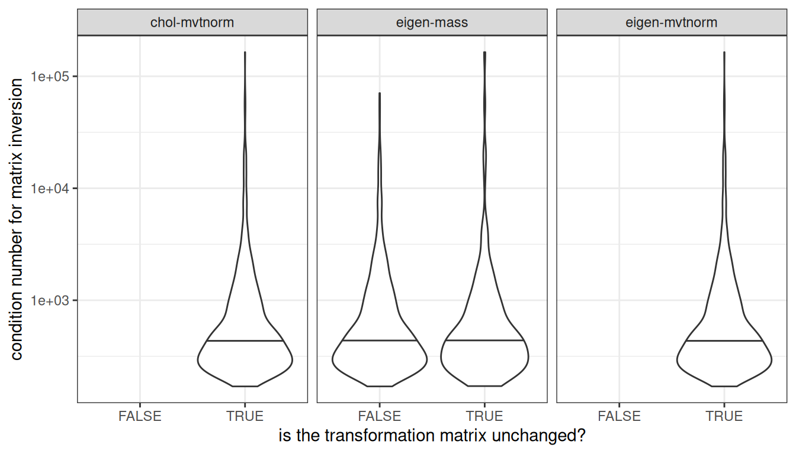

![]()
set.seed(1L)
sample(letters) [1] "y" "d" "g" "a" "b" "k" "n" "r" "w" "j" "f" "t" "q" "x" "i" "e" "u" "l"
[19] "s" "p" "o" "m" "v" "z" "c" "h"May 18, 2025
Computing the eigendecomposition of a matrix is subject to errors on a real-world computer: the definitive analysis is Wilkinson (1965). All you can hope for is a solution to a problem suitably close to x. So even though a real asymmetric x may have an algebraic solution with repeated real eigenvalues, the computed solution may be of a similar matrix with complex conjugate pairs of eigenvalues.
–help("eigen")
A few weeks ago, in the beforetimes when I’d not personally had the soul-crushingly unpleasant experience of being infected with that covid-19 thing,1 some colleagues2 approached me to talk about a reproducibility issue they’d been having with some R code. They’d been running simulations that rely on generating samples from a multivariate normal distribution, and despite doing the prudent thing and using set.seed() to control the state of the random number generator (RNG), the results were not computationally reproducible. The same code, executed on different machines, would produce different random numbers. The numbers weren’t “just a little bit different” in the way that we’ve all wearily learned to expect when you try to force computers to do mathematics. They wer painfully, brutally, catastrophically, irreproducible different. Somewhere, somehow, something broke.3 4
That’s not supposed to happen…
… and to be fair, in most situations it doesn’t happen. Most computations are reproducible, and even random number generation does what it’s supposed to do as long as you’re careful with the seed. Or, to put it more plainly, the set.seed() method for controlling the results of your computations in R works just fine. At the risk of being tiresome, here’s a “random” permutation of the letters of the English alphabet that we obtain in R after the seed is fixed:
[1] "y" "d" "g" "a" "b" "k" "n" "r" "w" "j" "f" "t" "q" "x" "i" "e" "u" "l"
[19] "s" "p" "o" "m" "v" "z" "c" "h"Here is THE SAME BLOODY PERMUTATION of those letters, produced a second time because the author is bored and she wants you to understand that this is a quarto document so everything that you see here is being done in an actual R session and she is not making it up:
[1] "y" "d" "g" "a" "b" "k" "n" "r" "w" "j" "f" "t" "q" "x" "i" "e" "u" "l"
[19] "s" "p" "o" "m" "v" "z" "c" "h"Because the original code and the replication code both use set.seed(1) before calling sample() to shuffle the letters of the alphabet into a random order, we get the same random permutation in both cases. And although I’m executing this code twice on the same machine, there’s no reason to expect that it would make a difference if I ran the original code on my ubuntu laptop running R 4.4.3 or on a window machine running R 4.3.1. It “should” be the same result either way. I mean… that’s the whole purpose of set.seed(). It’s “supposed” to make your code reproducible, even though you are doing “random” things with that code. Right?
Well. It might. If you’re lucky.
That’s not what my colleagues experienced with their code when generating multivariate random normal samples. In their case, different machines produced different random samples even though the code used set.seed() to (ostensibly) prevent that from happening. Quite reasonably, their first thought was “WHAT THE FUCK IS THIS???”.
Having encountered the problem, their second thought was that it was their fault: they must have done something wrong with their code that caused the simulations to break. It wasn’t that. Their code was fine. Their third thought was that something was wrong with R itself, or more precisely with MASS::mvrnorm(), since this is the function that was causing all the difficulty. They couldn’t see anything wrong with the function though, so they asked me to look into it.
My first thought, when they oh-so-innocently dropped a nuclear weapon on my desk, was that MASS could not possibly be the problem. I mean, not really. It’s a very carefully tested package, it is very widely used, it’s fine. Right? Though… actually, now that I think of it MASS::mvrnorm() is a very old function, and it makes some assumptions about what happens at a lower level that might not be right. So… maybe it is the problem??? I don’t really know…
Look, it’s complicated okay?
So let me get back to you on that because when you track down far enough, the root cause of the problem my colleagues ran into wasn’t really the MASS package. The actual problem turned out to be the inconvenient fact that floating point arithmetic does not behave like real arithmetic, and that in turn has the teeeeensy tiny side effect that computers very often don’t do what people expect them to do.
Le sigh.
I should have known. In hindsight it was so obviously going to be floating point issues5 that I shouldn’t have spent hours/days/weeks looking into it. As I said on Mastodon at the time:
In future, whenever I’m asked “why is [thing] not reproducible even though I set the RNG seed?” I’m not even going to bother looking into the specifics: I’m just going to reply “floating point arithmetic” and wait until I am inevitably proven correct.
People will be amazed at my precognitive powers and my apparently-encyclopedic knowledge of all things computational. They will praise my genius, my devotees will raise me up on a palanquin, and I shall live as a queen and goddess amongst the lesser mortals…
…well, maybe not.
So, okay. The problem that my colleagues encountered was an “across different machines” kind of thing, and as a consequence it’s not easy for me to replicate that precise issue using a single machine like the one that renders this post. Nevertheless, I can approximate the issue using a “trick” that seems very clever if you’ve never encountered it before, but in reality is quite prosaic.6 Consider these two covariance matrices, cov1 and cov2. Here’s the code that generates them:
When printed out, they look identical:
[,1] [,2] [,3] [,4]
[1,] 4.58 -1.07 2.53 0.14
[2,] -1.07 5.83 1.15 -1.45
[3,] 2.53 1.15 2.26 -0.79
[4,] 0.14 -1.45 -0.79 4.93 [,1] [,2] [,3] [,4]
[1,] 4.58 -1.07 2.53 0.14
[2,] -1.07 5.83 1.15 -1.45
[3,] 2.53 1.15 2.26 -0.79
[4,] 0.14 -1.45 -0.79 4.93But of course, since you’ve already seen the code you will be entirely unsurprised to discover that cov2 is in fact a very slightly perturbed version of cov1:
[,1] [,2] [,3] [,4]
[1,] 1.253220e-12 -5.131451e-13 2.597922e-13 -9.740264e-13
[2,] -5.131451e-13 1.641354e-12 -1.820766e-13 1.476375e-12
[3,] 2.597922e-13 -1.820766e-13 -3.023359e-12 -1.514788e-12
[4,] -9.740264e-13 1.476375e-12 -1.514788e-12 8.970602e-14Tiny differences like this are what we encounter when floating point truncation errors occur.7 To use the classic example, when we try to compute a simple sum like 0.1 + 0.2 - 0.3, the result should be zero (duh), but if we do it on a computer it usually isn’t. The answer we actually get is very slightly wrong because the binary representation of 0.1 in floating point representation8 is infinitely long and cannot be exactly represented by a double precision floating point number, and so…
…the answer is not quite right.
Even worse, the precise result of a computation to which floating point truncation error applies is not necessarily invariant across systems. Operating system differences, compiler settings, and a host of other factors can influence the outcome. The details don’t matter for this post, and frankly I don’t understand all of them myself. For all I know the colour of the laptop case might be relevant, or the name of the programmer’s cat. Weirdness abounds once your calculations start to run up against the limits of floating point precision.
Just for the sake of argument then, let’s imagine that during the course of some fancy simulation, you and I compute a covariance matrix on different machines. It’s supposed to be the same covariance matrix, but thanks to the weirdness of floating point your machine computes cov1 and mine computes cov2. The differences are very small, but they’re large enough that – SOMEHOW, IN DEFIANCE OF ALL THE LAWS OF GOD AND MAN – this happens:
[1] -0.4391833 0.2560893 0.8542052 -2.2883238[1] 0.2878007 0.5942556 -0.2596185 -2.3919000Yeah… uh… those aren’t even remotely the same thing.
At this point in the post, you will probably have one of two reactions depending on your background. If you have had the traumatising experience of reading a numerical linear algebra textbook and have somehow survived, you will be sighing wearily and going “yes Danielle, that’s what happens when you try to do mathematics with sand”. But if you live in the somewhat kinder lands of everyday applied science where the sun still shines and your gods were not brutally murdered by IEEE-754, you are probably thinking something more along the lines of “WHAT THE FUCK IS THIS INSANITY DANIELLE????????”
So. Yeah. This is one of those awkward things about computers. The moment we attempt to generate random vectors with a multivariate normal distribution, very small differences between cov1 and cov2 can (sometimes, depending on the precise method used to do the sampling) lead to big differences in the numbers that get generated, even though the RNG seed is the same. What is even more peculiar is that this can (and does) happen even when the random numbers in question all have the correct distributional properties. That is to say: the results are correct, they just aren’t reproducible.
That’s a little puzzling. Other kinds of calculation that rely on random number generation aren’t affected the same way. Intuitively, we expect that tiny differences in the input parameters should lead to tiny differences in output values. Indeed, that’s exactly what happens if we generate random samples from a univariate normal distribution with slightly different standard deviations:
s1 <- sqrt(cov1[1L, 1L])
s2 <- sqrt(cov2[1L, 1L])
set.seed(1L)
r1 <- rnorm(n = 1L, mean = 0L, sd = s1)
r1[1] -1.34067[1] -1.34067These numbers look identical, but the input values are sliiiiiightly different as a consequence of the tiny differences in the input parameters s1 and s2, there are slight differences between r1 and r2:
The thing is, though, this difference is minuscule and it is exactly in line with our intuitions. That’s how it should be, right? Tiny change in input equals tiny change in output. Very sensible. Very mindful. Very demure. So why do we get intuitive behaviour from rnorm(), but deeply counterintuitive behaviour from MASS::mvrnorm()?
I mean… good question, right?
To understand why this problem arises, it’s important to understand that sampling from a multivariate normal is a somewhat different kettle of fish to drawing from a univariate normal distribution, and computationally trickier. In the univariate case, let’s say we’re using the polar form of the Box-Muller method. To transform two uniform variates into two normal variates requires three multiplications, one logarithm, one square root, and one division. Each of those computations is a thing that must be performed on a machine that uses floating point arithmetic, and as a tedious consequence each of these computations can introduce very small rounding errors into the solution that the machine calculates. This is the nature of floating point arithmetic. Even so, we don’t have a reason to expect things to go catastrophically wrong in this case: there just aren’t that many computations involved, and with so few computations involved you aren’t very likely9 to encounter any kind of “everything goes to shit” problem when runaway truncation error takes hold.
Sampling from a multivariate normal, on the other hand, requires a matrix decomposition. That makes it a veeeeeeerrrrrry different kind of thing. There are many different ways you can choose to do this decomposition (more on this very shortly…) and still end up with suitable samples, but no matter which method you choose you will be on the hook for a lot more computations than in the univariate case, and to put it crudely, more computations means more opportunities for floating point arithmetic to find an esoteric edge case with which to fuck you over.
And so, to set the stage for how this can all go horribly wrong, let’s do a quick refresher on the multivariate normal distribution, because who doesn’t love the opportunity to break out a mathematical statistics textbook?
Let \(\mathbf{x} = (x_1, \ldots, x_k)\) be a \(k\)-dimensional random vector that is distributed according to a multivariate normal with mean vector \(\mathbf{\mu} = (\mu_1, \ldots, \mu_k)\) and positive definite10 covariance matrix \(\mathbf{\Sigma} = [\sigma_{ij}]\). The probability density function looks like this:
\[ p(\mathbf{x} | \mathbf{\mu}, \mathbf{\Sigma}) = (2\pi)^{-k/2} \det(\mathbf{\Sigma})^{-1/2} \exp \left(-\frac{1}{2} (\mathbf{x} - \mathbf{\mu})^T \mathbf{\Sigma}^{-1} (\mathbf{x} - \mathbf{\mu}) \right) \]
A key property of the multivariate normal is this: a linear transformation of a multivariate normal random vector is itself distributed according to a multivariate normal. More precisely, if \(\mathbf{z} \sim \mathcal{N}(\mathbf{\mu}, \mathbf{\Sigma})\) and \(\mathbf{x} = \mathbf{Az} + \mathbf{b}\), then \(\mathbf{x} \sim \mathcal{N}(\mathbf{A\mu} + \mathbf{b}, \mathbf{A \Sigma A^T})\). It’s something I recite to myself as an axiom on a weekly basis, but for the purposes of this post I decided to dig out one of my old mathematical statistics textbooks and revisited the proof.
It wasn’t very interesting.
Nevertheless, as a corollary of this proof we can assert that if \(\mathbf{z} \sim \mathcal{N}(\mathbf{0}, \mathbf{I})\) and \(\mathbf{x} = \mathbf{Az} + \mathbf{b}\), then \(\mathbf{x} \sim \mathcal{N}(\mathbf{b}, \mathbf{AA^T})\). This gives us a convenient way to sample from a multivariate normal distribution. Without loss of generality11 I’ll fix \(\mathbf{b} = \mathbf{0}\) and note that if we have numbers \(\mathbf{z}\) that follow independent standard normal distributions, and some matrix \(\mathbf{A}\) such that \(\mathbf{\Sigma} = \mathbf{A A}^T\), then the transformed variates \(\mathbf{x} = \mathbf{Az}\) are multivariate normally distributed with covariance matrix \(\mathbf{\Sigma}\).12
Thrilling stuff, I think we can all agree?
The key thing here is that this linear transformation property gives us a simple and effective algorithm for sampling multivariate normal variates:
rnorm(), but if all you have is uniformly distributed random numbers you can use the Box-Muller method to transform them appropriately.At this point you might be thinking, “but Danielle, matrix decomposition has never brought love into my life no matter how much I talk up the size of my eigenvalues on grindr, what do I do????” and okay yeah fair point. Also, you might – extremely reasonably, I might add – still be trying to figure out why any of this mathematical trickery explains why your code isn’t reproducible. Again, fair point.
To understand exactly where things went wrong, let’s demystify what MASS::mvrnorm() does by implementing a slightly simplified version of what was going on under the hood. This will help us pick apart what is happening here.
But… before we start, let’s make a copy of the hidden variable .Random.seed. This isn’t critical for generating random numbers, but since this is the location where R hides information about the RNG state, it’s very handy to keep track of what’s happening to it:
Okay, we’ve stored a copy of the RNG state, so now let’s get started on the random sampling itself. To mirror what MASS::mvrnorm() does, I’ll call the eigen() function from base R to compute eigenvalues and eigenvectors. This actually the point at which everything goes awry for us, but to some extent you can’t blame R for this, because what’s actually happening here is that R passes all the work off to LAPACK, and it’s at that level that our problem arises:
Fabulous. Amazing. The covariances matrices cov1 and cov2 have now both been decomposed, we have eigenvectors and eigenvalues for both of them, and I am digging into my cutlery draw looking for a fork with which to eat the promised cake…
Except. Obviously, because this post still has quite a lot of verbiage to come, something has gone wrong. So let’s put the forks away and take a moment to think about what the code above is actually doing. Just in case you happen to have “forgotten”, the eigendecomposition of a real symmetric matrix \(\mathbf{\Sigma}\) can be expressed as
\[ \mathbf{\Sigma} = \mathbf{Q} \mathbf{\Lambda} \mathbf{Q}^\prime \]
where \(\mathbf{\Lambda}\) is a diagonal matrix containing the eigenvalues of \(\mathbf{\Sigma}\) and \(\mathbf{Q}\) is an orthogonal matrix whose columns are the real, orthonormal eigenvectors of \(\mathbf{\Sigma}\). It says so in the wikipedia entry so it must be true.13 When calling eigen() in R, the return value is a list that contains a vector of eigenvalues, and a matrix of eigenvectors. To keep things consistent with the notation in the equation above, let’s pull those out:
Now that we have these two matrices, we can construct a matrix \(\mathbf{A} = \mathbf{Q} \mathbf{\Lambda}^{1/2}\) where \(\mathbf{\Lambda}^{1/2}\) is a diagonal matrix that contains the square root of the eigenvalues as its diagonal elements. This matrix has the desired property \(\mathbf{A} \mathbf{A}^\prime = \mathbf{\Sigma}\), so we can use it as the transformation matrix to sample multivariate normal variates with the desired correlational structure. So let’s do that:
At this point let’s check the state of the random number generator. Has it changed as a result of any of these procedures?
No. No it has not. Nothing that we have done so far has invoked the random number generator in R. Nor should it: constructing the matrix \(\mathbf{A}\) isn’t supposed to be a stochastic process. We should not expect R to have invoked the random number generator up to this point, and indeed it has not.
However, we’re now at the point where we do need to produce some random numbers, because we need a vector \(\mathbf{z}\) of independent normally distributed variates with mean zero and standard deviation one. When I called MASS::mvrnorm() earlier, I used set.seed(1L) to fix the state of the random number generator beforehand, and I’ll do so again:
For simplicity I’ve explicitly formatted the output as a matrix so that R will treat it as a column vector, and now all I have to do to construct my correlated random variates is to compute \(\mathbf{Az}\):
Et voila, we are done. We have now generated random vectors that are identical to those produced by MASS::mvrnorm(). Let’s just confirm this:
Yay us! Our code has perfectly reproduced the behaviour of multivariate normal sampling in MASS. Somewhat unfortunately, as we’ve already seen, mvr1 and mvr2 are massively different to each other, which is a bit of a problem for us. They’re not a teeny tiny bit different in the same way that cov1 and cov2 are a tiny bit different, the differences here are huge.
So… where did things go wrong?
Okay that’s a silly question because earlier in the post I already told you that the call to eigen() is what created the problem. A better question would be to ask what went wrong when I called eigen(), and since I’ve dragged this out long enough already let’s just jump to the correct answer. To that end, let’s take a look at the matrix of eigenvectors \(\mathbf{Q}\) that is computed in both cases, paying particular attention to the last column:
[,1] [,2] [,3] [,4]
[1,] 0.1714861 0.82547827 0.1008194 -0.52821738
[2,] -0.7960923 -0.05900595 0.5498939 -0.24570733
[3,] -0.1810490 0.53628887 0.1570504 0.80929023
[4,] 0.5514081 -0.16582573 0.8141175 0.07525712 [,1] [,2] [,3] [,4]
[1,] 0.1714861 0.82547827 0.1008194 0.52821738
[2,] -0.7960923 -0.05900595 0.5498939 0.24570733
[3,] -0.1810490 0.53628887 0.1570504 -0.80929023
[4,] 0.5514081 -0.16582573 0.8141175 -0.07525712Okay yeah… the sign on the last eigenvector has been reversed. We can see this more clearly by doing a scalar division of these two matrices:
As a consequence, here’s what the transformation matrix \(\mathbf{A}\) looks like in both cases:
[,1] [,2] [,3] [,4]
[1,] 0.4641655 2.0673290 0.1969347 -0.2278546
[2,] -2.1548024 -0.1477746 1.0741302 -0.1059896
[3,] -0.4900497 1.3430827 0.3067730 0.3490996
[4,] 1.4925097 -0.4152942 1.5902489 0.0324633 [,1] [,2] [,3] [,4]
[1,] 0.4641655 2.0673290 0.1969347 0.2278546
[2,] -2.1548024 -0.1477746 1.0741302 0.1059896
[3,] -0.4900497 1.3430827 0.3067730 -0.3490996
[4,] 1.4925097 -0.4152942 1.5902489 -0.0324633Yeah… those are not the same at all. Counterintuitively though, they are both perfectly good solutions to the problem at hand. It’s not like one of them is right and the other one is wrong: they’re both perfectly acceptable solutions, in the sense that \(\mathbf{A} \mathbf{A}^\prime = \mathbf{\Sigma}\) for both A1 and A2, and will therefore produce multivariate normal distributed variates with the appropriate covariance structure when used.14 They are both correct decompositions in the sense we care about, but they are not the same decomposition. Simulations built on A1 and A2 will both be correct, but they will not be the same.
Ultimately, it is this phenomenon that breaks reproducibility with MASS::mvrnorm(). Tiny quantitative changes in the covariance matrix that we pass as input can sometimes produce large qualitative changes in the eigendecomposition returned by LAPACK. MASS::mvrnorm() makes no attempt to protect the user from these effects, so when LAPACK creates this problem MASS does not fix it. In practice, therefore, random numbers generated this way will often be irreproducible on machines that rely on floating-point arithmetic.15
The first thought you might have is “well, Danielle, could we maybe do something about these indeterminacies? Does floating point arithmetic have to be this unpredictable?” It’s an enticing thought, right? I mean, if we could guarantee that every machine produced the same answer whenever asked to perform a simple arithmetic calculation, we wouldn’t be in this mess. Problem solved. Rainbows. Unicorns. Sunshine. Fully automated gay space luxury communism.
Yeah, well. About that. Look, I am not an expert in this area at all, but just take a look at this page on conditional numerical reproducibility on Intel CPUs and GPUs. This is hard. If you want to make absolutely certain that two machines perform the exact same arithmetic operations in the exact same order so that you can guarantee that the exact collection of bits in the output is fully reproducible, you are going to have to make a lot of sacrifices and your computer will slow to a crawl trying to make it happen. We are almost never willing to pay the real costs that computational reproducibility imposes, if only because most of us would like to have our matrix decomposition complete sometime within the same century that it started. As Dan Simpson phrased it on Bluesky:
It is possible to make code [bit] reproducible. Waiting for it to run becomes reminiscent of the tar drop experiment. But it is possible.
It is an uncomfortable truth for a scientist to accept, but it is a truth nonetheless: the actual reason we don’t have reproducible code is that we don’t want it enough, and we never will. Life is short, and computational reproducibility is slow.
When faced with the cruel truths of material reality, one has a choice to make. We can either choose to live in a pure world of conceptual abstractions, floating above the mess and chaos of the world as it exists on the ground, or we can accept that – in this instance – we are engaged in the absurd exercise of trying to make a block of sand do linear algebra and of course that is going to be ugly. We are trying to force reality to bend to our mathematical whims and unfortunately reality is only partially willing to comply.
So let us accept a core truth: for any realistic level of time and money that a human is willing to spend performing an automated computation, there is always some probability that the machine will fuck it up. We cannot eradicate this risk in real life, and we must always act on the assumption that the computational machinery underneath our code might occasionally do some batshit things.
Given that the problem itself is always going to be with us, there are a few ways of dealing with it. If you want to stay within the world of eigendecompositions (which actually you probably don’t want to do, but we’ll get to that later…) there is a “simple” trick that is adopted by mvtnorm::rmvnorm(). In MASS::mvrnorm() the transformation matrix is defined as \(\mathbf{A} := \mathbf{\Lambda}^{1/2} \mathbf{Q}^\prime\), but that’s not the only way to use the eigendecomposition to find an acceptable transformation matrix \(\mathbf{A}\). I haven’t been able to find an explicit statement of this in the documentation,16 but if you look at the source code it’s not too hard to see that if you’re calling mvtnorm::rmvnorm() with method = "eigen", the actual transformation matrix it uses is this one:
\[ \mathbf{A} := \mathbf{Q} \mathbf{\Lambda}^{1/2}\mathbf{Q}^\prime \] For the purpose of multivariate normal sampling this is a perfectly acceptable choice of transformation matrix, which we can demonstrate with a few incredibly boring lines of matrix algebra:
\[ \begin{array}{rcl} \mathbf{A} \mathbf{A}^\prime &=& (\mathbf{Q} \mathbf{\Lambda}^{1/2}\mathbf{Q}^\prime) (\mathbf{Q} \mathbf{\Lambda}^{1/2}\mathbf{Q}^\prime)^\prime \\ &=& \mathbf{Q} \mathbf{\Lambda}^{1/2}\mathbf{Q}^\prime \mathbf{Q} \mathbf{\Lambda}^{1/2}\mathbf{Q}^\prime \\ &=& \mathbf{Q} \mathbf{\Lambda} \mathbf{Q}^\prime \\ &=& \mathbf{\Sigma} \end{array} \]
Somewhat to my horror, this trick actually fixes the problem. Remember, the nightmarish thing that we are trying to protect against is not “trivial” floating point errors where a few of the numeric values are perturbed by some small amount: we are applied scientists and we simply do not care about what is happening in the 16th digit of the decimal expansion of blah blah blah. That’s not our problem. In the real world our problem is the catastrophic failure case in which those tiny perturbations cause LAPACK to flip the sign of an eigenvector, and possibly induce a catastrophic divergence in how the transformation matrix \(\mathbf{A}\) is defined within the R code. That’s the thing that fucks us.17
Formally, we can describe this “eigenvalue flip” operation by considering the possibility that LAPACK – for whatever reason – decides to return the matrix \(\mathbf{QF}\) instead of \(\mathbf{Q}\), where the “flip matrix” \(\mathbf{F}\) is a diagonal matrix whose diagonal elements are either 1 or -1. We need a definition for our transformation matrix \(\mathbf{A}\) that is robust in the face of this kind of floating point nonsense. It is very clear that the MASS method is not invariant when this happens, since in the flipped case case it will use the transformation matrix
\[ \mathbf{A} = \mathbf{\Lambda}^{1/2} (\mathbf{QF})^\prime \]
which is clearly not the same matrix it would have returned if that pesky flip matrix \(\mathbf{F}\) had not been inserted. In contrast, take a look at what happens to the transformation matrix used by mvtnorm when a flip matrix is inserted by LAPACK and/or the capricious gods of floating point numbers. Turns out the effect is…
\[ \begin{array}{rcl} \mathbf{A} &=& \mathbf{QF} \mathbf{\Lambda}^{1/2} \mathbf{(QF)}^\prime\\ &=& \mathbf{Q} \mathbf{F} \mathbf{\Lambda}^{1/2} \mathbf{F}^\prime \mathbf{Q}^\prime \\ &=& \mathbf{Q} \mathbf{\Lambda}^{1/2} \mathbf{Q}^\prime \\ \end{array} \]
…absolutely nothing. Using mvtnorm::rmvnorm() instead of MASS::mvrnorm() won’t do a damn thing to protect you from floating point errors, but it will protect you against a particular kind of catastrophic reproducibility failure caused by those floating point errors, and which MASS has no defence against. So that’s nice.
A little later in the post I’ll start implementing my own versions of both mvtnorm::rmvnorm() and MASS::mvrnorm(), and since I’ve already provided a demonstration of how MASS does the sampling, I should probably conclude this section by talking about what mvtrnorm does. First, here’s what it generates when asked to generate two samples using the covariance matrix cov1:
[,1] [,2] [,3] [,4]
[1,] -1.905011 -0.1682761 -1.7718432 3.583385
[2,] 1.369434 -2.0558785 0.3593391 1.772799Let’s try do to this ourselves, yeah? The internal code to mvtnorm::rmvnorm() is slightly more elaborate, and we will talk more about the details later, but in essence what it does is this:
set.seed(1L)
z2 <- matrix(rnorm(8L), nrow = 2L, byrow = TRUE)
A <- Q1 %*% sqrt(L1) %*% t(Q1)
z2 %*% A [,1] [,2] [,3] [,4]
[1,] -1.905011 -0.1682761 -1.7718432 3.583385
[2,] 1.369434 -2.0558785 0.3593391 1.772799Yup, same thing. I could do some simulations to show that these are distributed according to the appropriate multivariate normal distribution, sure, but I’m not going to. It works, and this is going to be a long post no matter what I do. So let’s move along…
In one sense, the problem that my colleagues brought to me is already solved. I haven’t yet shown you any simulations to prove it (I will do so later), but for the moment just believe me when I say that a switch from MASS::mvrnorm() to mvtnorm::rmvnorm() will be sufficient to guard against the kind of catastrophic irreproducibility I was concerned with at the start of this post. So yeah I could stop here. My colleagues will be happy to have a practical, workable solution to the question. But I’ve spent so many hours already wrapping my head around the problem that it almost seems a shame not to see it through to the bitter end.
Let’s take a step back. Yes, it’s nice that we have a safer way to sample from a multivariate normal using the eigendecomposition of the covariance matrix but… why are we doing an eigenanything here? In this particular context we have no inherent interest in the eigenvectors or the eigenvalues: our primary goal is to construct some matrix \(\mathbf{A}\) that has the desired property \(\mathbf{AA}^\prime = \mathbf{\Sigma}\), and our secondary goal is to do this using a method that is robust in the face of floating point madness. We have no specific interest in eigendecompositions.
With that in mind, it’s useful to remember that the Cholesky decomposition is a thing that exists. For symmetric positive definite covariance matrix \(\mathbf{\Sigma}\), the Cholesky decomposition gives us an upper18 triangular matrix \(\mathbf{U}\) with positive valued diagonal elements such that \(\mathbf{U}^\prime \mathbf{U} = \mathbf{\Sigma}\), and therefore we can use the Cholesky factorisation \(\mathbf{U}\) as the transformation matrix (i.e., the vector \(\mathbf{x} = \mathbf{zU}\) will be multivariate normal distributed with covariance matrix \(\mathbf{\Sigma}\)). In fact, there are some good reasons to prefer the Cholesky approach over the eigendecomposition.
The first reason is speed, since as a general rule, the Cholesky decomposition is somewhat faster. Indeed, some algorithms for solving eigendecompositions will start by computing the Cholesky factorisation first anyway. In high performance situations this likely matters, but in my line of work it’s not usually critical.
The second reason, and the one that appeals to me in this context is that the Cholesky decomposition gives us a simpler method to avoid the “catastrophic” irreproducibility issue that we encountered with MASS::mvrnorm().
To understand why Cholesky makes this a little easier to fix, notice that the issue with MASS::mvrnorm() arises because the eigenvectors that comprise \(\mathbf{Q}\) are determined only up to scalar multiplication (i.e., if \(\mathbf{v}\) is an eigenvector associated with eigenvalue \(\lambda\) then so too is \(u\mathbf{v}\) for scalar \(u\))19 By convention the eigenvectors returned by eigen() are normalised (i.e., have length 1),20 but that still does not give us a unique solution, and as we have seen it’s possible for the sign of an eigenvector to change with small perturbations to \(\mathbf{\Sigma}\), and that is sufficient to break reproducibility of MASS::mvrnorm() because the transformation matrix it computes is not invariant to these flips. The solution adopted by mvtnorm::rmvnorm() with method = "eigen" is to define the transformation matrix differently, and in a way that sign changes on an eigenvector have no effect on the samples.
Yes, okay Danielle thank you, you have now restated the problem exactly and thereby made this already-tiresome post even longer, but how does Cholesky fix that?
Why thank you babe, I am so glad you asked.
Essentially, it’s easier because the Cholesky factorization is unique up to the sign of the columns, and if we impose the requirement that the main diagonals be positive valued, the solution is actually unique. Better yet, from our point of view as R users, that constraint appears to be imposed by chol(), and – as far as I can tell – is inherited directly from LAPACK, so we are all good. Or, to simplify the whole thing even further: eigen() returns an orthonormal matrix of eigenvectors \(\mathbf{Q}\) but it is not always the same one, which is problematic for sampling purposes; chol() returns a triangular matrix with positive diagonal entries \(\mathbf{U}\) and there’s only one of those, so you don’t have the same worry.
Here’s how that plays out with the matrices cov1 and cov2 that I constructed at the start of the post:
[,1] [,2] [,3] [,4]
[1,] 2.140093 -0.4999782 1.1821914 0.0654177
[2,] 0.000000 2.3622070 0.7370522 -0.5999866
[3,] 0.000000 0.0000000 0.5649581 -0.7524714
[4,] 0.000000 0.0000000 0.0000000 1.9998808 [,1] [,2] [,3] [,4]
[1,] 2.140093 -0.4999782 1.1821914 0.0654177
[2,] 0.000000 2.3622070 0.7370522 -0.5999866
[3,] 0.000000 0.0000000 0.5649581 -0.7524714
[4,] 0.000000 0.0000000 0.0000000 1.9998808These two matrices are essentially identical (up to the usual rounding errors), so there will be no surprises for us later on. So when we use the Cholesky decomposition to do the work this is what we get…
[,1] [,2] [,3] [,4]
[1,] -1.3406697 0.7470168 -1.07732870 3.667993
[2,] 0.7051774 -2.1028628 0.06019019 1.623611
[,1] [,2] [,3] [,4]
[1,] -1.3406697 0.7470168 -1.07732870 3.667993
[2,] 0.7051774 -2.1028628 0.06019019 1.623611Well, not quite. These two are the same, but I’m glossing over some nuance in what mvtnorm::rmvnorm() actually does. As a result…
set.seed(1L)
mvtnorm::rmvnorm(2L, sigma = cov1, method = "chol")
set.seed(1L)
mvtnorm::rmvnorm(2L, sigma = cov2, method = "chol") [,1] [,2] [,3] [,4]
[1,] -1.482092 -1.5125973 -0.5870096 0.7687608
[2,] 0.922518 0.7956095 1.3759318 -1.9517181
[,1] [,2] [,3] [,4]
[1,] -1.482092 -1.5125973 -0.5870096 0.7687608
[2,] 0.922518 0.7956095 1.3759318 -1.9517181…these aren’t the same as the last lot. What you actually have to do if you want to precisely reproduce the behaviour of mvtnorm::rmvnorm() is closer to this:
R1 <- chol(cov1, pivot = TRUE)
R1 <- R1[, order(attr(R1, "pivot"))]
z2 %*% R1
R2 <- chol(cov2, pivot = TRUE)
R2 <- R2[, order(attr(R2, "pivot"))]
z2 %*% R2 [,1] [,2] [,3] [,4]
[1,] -1.482092 -1.5125973 -0.5870096 0.7687608
[2,] 0.922518 0.7956095 1.3759318 -1.9517181
[,1] [,2] [,3] [,4]
[1,] -1.482092 -1.5125973 -0.5870096 0.7687608
[2,] 0.922518 0.7956095 1.3759318 -1.9517181Okay so that actually is the same. A little later in the post I will talk about this “pivot” stuff, and tl;dr it does serve a useful purpose, but in truth it’s only there to handle edge cases so we don’t need to worry about it right now.
At this point in the post, I feel a need to digress slightly. To be clear, I do not want to pursue this digression because my original goal in this post was to figure out what was going on in my colleagues code and we are waaaaaaay past that point already, but… the yak is there. The yak must be shaved, or we will never escape this horrible blog post.
So. Since we are here and discussing desiderata for a procedure that samples from a multivariate normal distribution, let’s consider this code. Suppose I fix the seed in R with set.seed(), and then sample two random vectors like this:
[,1] [,2] [,3] [,4]
[1,] -1.482092 -1.5125973 -0.5870096 0.7687608
[2,] 0.922518 0.7956095 1.3759318 -1.9517181Intuitively speaking, what do we expect to happen if we decide to sample three random vectors rather than two? For most of us, the intuition that we have is that this should happen:
[,1] [,2] [,3] [,4]
[1,] -1.482092 -1.5125973 -0.5870096 0.7687608
[2,] 0.922518 0.7956095 1.3759318 -1.9517181
[3,] 2.926835 1.3902467 2.5223180 -0.9985737The first two rows are unchanged, but a third row has now been added. That’s how we usually think about random sampling, but it’s not strictly required when we call a sampling procedure on a computer. Nevertheless, it’s pretty clear that mvtnorm::rmvnorm() produces this intuitive behaviour, at least when the Cholesky decomposition is used. Happily, it’s also what happens when we use the eigendecomposition. Here’s what happens when we sample two random vectors with a fixed seed…
[,1] [,2] [,3] [,4]
[1,] -1.905011 -0.1682761 -1.7718432 3.583385
[2,] 1.369434 -2.0558785 0.3593391 1.772799and here is what happens when we sample three:
[,1] [,2] [,3] [,4]
[1,] -1.905011 -0.1682761 -1.7718432 3.5833850
[2,] 1.369434 -2.0558785 0.3593391 1.7727993
[3,] 2.548065 -0.4238026 2.0197706 0.6485945Yay! Intuitive behaviour. That’s what I always hope to see my computer do, but I have learned from bitter experience that it doesn’t always work out that way. Case in point. Here is what happens when we sample two random vectors with MASS::mvrnorm():
[,1] [,2] [,3] [,4]
[1,] -2.064469 1.775641 -0.5440795 -0.04813373
[2,] 3.053402 -1.591002 2.0586509 -1.66920196Here is what happens when we ask it to sample three random vectors using the same random seed:
[,1] [,2] [,3] [,4]
[1,] 3.1727679 1.6700724 2.492507 -0.83227968
[2,] 0.5673774 0.1884158 1.106822 1.36044424
[3,] -2.0594844 2.4990037 -0.379729 0.02184323Siiiiiiiiigh. None of these numbers are even remotely the same. Something has gone awry, yet again. But it is important to understand what, precisely, has gone wrong. Critically, we need to understand that the MASS approach is still technically correct, in the sense that the three random vectors are all distributed in the way we want them to be, but when MASS generates the samples using the random number generator, it does so in a “nonsequential” way. The samples are independent of each other (conditional on \(\mathbf{\Sigma}\), of course), but there is a hidden dependence on the RNG state that – in effect – means that the user has to pretend that all the samples are generated “as a block”. You can’t think of these as sequential draws because of the peculiar way that the RNG has been invoked under the hood.
Again. This does not break the statistical properties of the samples. It is, however, an obvious source of fragility in the code that can hinder reproducibility in the wild. If the user decides to change the number of random variates in the simulation, all the variates will change, not merely the “extra” ones.21
Why does this happen? I almost don’t want to tell you. It’s so fucking stupid that it’s embarrassing for all of us.22 Let’s suppose I want to create a matrix with four columns, two rows, and with the numbers 1 to 8. Here’s one way to do that:
Fabulous. Wonderful. Thrilling. No wait… I need a third row. I want the numbers 1 to 12. Let’s do that:
[,1] [,2] [,3] [,4]
[1,] 1 4 7 10
[2,] 2 5 8 11
[3,] 3 6 9 12The numbers stored in the matrix are the same (in the sense that the numbers 1 to 8 were there before, and they’re still there after), but the rows have all changed because we’ve entered the values columnwise. Normally there is absolutely no reason to care about this whatsoever. Columns and rows aren’t special: add things columnwise, add them rowwise, who cares…
…except there are cases when it does matter. If the “data” to enter into our matrix happen to correspond to the variates sampled using rnorm(), then we really, really, really, really want to enter them rowwise. If we enter them rowwise, we get this:
[,1] [,2] [,3] [,4]
[1,] 1 2 3 4
[2,] 5 6 7 8 [,1] [,2] [,3] [,4]
[1,] 1 2 3 4
[2,] 5 6 7 8
[3,] 9 10 11 12When entries are filled rowwise, adding an “extra” row has no effect on the previous rows. The procedure used by mvtnorm::rmvnorm() uses the random numbers rowwise, and hence behaves intuitively. The procedure used by MASS::mvrnorm() uses them columnwise, and produces the counterintuitive behaviour shown above.
This particular failure of MASS::mvrnorm() is entirely different from the one I talked about earlier. The previous issue relates to how the transformation matrix \(\mathbf{A}\) is defined; this issue relates to how the independent normal variates \(\mathbf{z}\) are used. Not the same at all. But since the end result of the whole process is to generate a random vector \(\mathbf{x} = \mathbf{zA}\), and we cannot rely on either \(\mathbf{A}\) or \(\mathbf{z}\) to be “practically” reproducible, it might be a good idea not to rely to heavily on MASS in this context, yeah?
In real life, “row” and “column” are not interchangeable terms.
There’s one last feature in mvtnorm::rmvnorm() that I was uncertain about, and required a painful dive into the darkness of chapter 4 in Wilkinson (1965), and then a further skim through chapter 8. In chapter 4 of the book, he focuses solutions to systems of linear equations, which is why that’s the part of the book where he ends up talking about condition numbers for matrix inversions (see next section). But there’s a lot more in that chapter, and quite frankly I did not understand all of it. I cried a few times.
However.
Let’s suppose that you’ve made the decision to call mvtnorm::rmvnorm(), and you’re thinking that maybe you want to use the Cholesky decomposition rather than the eigendecomposition. Fair enough, good call, I will totally back you on this. But let’s also suppose that you’ve made the (probably foolish) decision to dive into the code for mvtnorm::rmvnorm() and you’re trying to understand what it does when it computes the Cholesky decomposition. Top marks for bravery, seriously, but if you do that you’re going to quickly find yourself asking what this pivot = TRUE thing is all about, and that gets a bit tricky.
That’s the bit where Wilkinson comes to our rescue. One of the key things that chapter 4 of the book dives into is what actually happens on a computer when you ask it to do a Gaussian elimination procedure (which, more or less, is the same thing as a Cholesky decomposition). At each step in the elimination process you have to divide one thing by another thing, and blah blah blah, and you end up needing to divide one row by some multiplier of another row, and OH DEAR LORD IN HEAVEN IT IS 1994 AGAIN AND I AM TRAPPED IN THE BACK ROW OF THE BRAGG LECTURE THEATRE WITH THE ENGINEERING BOYS AND I WANT TO DIE.
Um.
Okay, let’s simplify. There’s one key idea here: there are a lot of row operations that go into solving this problem, and if the divisor on one of these steps turns out to be very very small, the computation error due to floating point nonsense can be very large. It can go haywire. So there’s a trick where you interchange some of the rows to avoid running into the trap. This interchange tends to stabilise the procedure.23 That’s what the pivot = TRUE bit is going on about. Pivoting is a trick we do for numerical stability, but in practice (when covariance matrices are involved) this is mostly a thing we care about if the matrix is nearly singular. It doesn’t make much of a difference otherwise.24 However, as the documentation to chol() points out:
If
pivot = TRUE, then the Cholesky decomposition of a positive semi-definitexcan be computed. The rank ofxis returned asattr(Q, "rank"), subject to numerical errors. The pivot is returned asattr(Q, "pivot"). It is no longer the case thatt(Q) %*% Qequalsx. However, settingpivot <- attr(Q, "pivot")andoo <- order(pivot), it is true thatt(Q[, oo]) %*% Q[, oo]equalsx, or, alternatively,t(Q) %*% Qequalsx[pivot, pivot].
Ah. That’s what’s going on with rmvnorm() code: because for our purposes it is critical that \(\mathbf{Q}^\prime \mathbf{Q} = \mathbf{\Sigma}\), that’s the whole bloody point. So if we allow pivoting for numerical stability reasons, it is critical that we reorder the matrix appropriately.
Let us now take a step back and, in doing so, breathe deeply for a moment.
It is a truth universally acknowledged, at least by those of us who have had the soul crushing experience of trying to perform linear algebra by hand or even with the assistance of this absurd contraption upon which I write these words, that linear algebra is the enemy of all that is good in this world. Love, joy, freedom, sex, and kittens: linear algebra hates them all. With good cause, then, we seek its destruction. With our mathematics we have created a monster, and it is our moral duty to destroy it.
None of this animus was necessary. Linear algebra was perfectly willing to destroy itself, and frankly we didn’t have to try very hard, all we had to do was feed it one ill-conditioned matrix, compute the wrong fucking condition number, and the entire hubristic edifice crashes to the ground like a second-rate Death Star. The Ewoks all cheer.
Aaaaaanyway.
With this as preface, the time has come to talk about numerical stability. Nobody really wants to, but we’re all trapped here in the same asylum and it passes the time. As such it inevitably transpires that we ask ourselves a very stupid question: “Danielle, Danielle, did you check to see if the matrix cov1 is ill conditioned? Danielle, what’s the condition number? Danielle, Danielle, Danielle, did you put on your dancing shoes? Is the world well?”
Um. Sorry. I might have let my crush on Tex Perkins get in the way of my writing here.
Okay. So. Continuing with a bit of a theme for this post, you might have one of two reactions here. Most people reading this post will probably be asking what a condition number is and wondering why they should care. A tiny subset will be thinking… well yeah but did you calculate it?
Not for the first time in this post, Danielle sighs…
Okay so, for the benefit of folks in the second category, there’s a bit of tendency when talking about linear algebra problems to compute a thing called the “condition number” and say that if the condition number is close to 1 then the matrix is “well-conditioned” – and therefore “good”, I guess? – but if it is much larger than 1 then it is “ill-conditioned”. And therefore bad? If you haven’t done the deep dive to figure out where this nomenclature comes from or what problems it was designed to address, it’s easy to fall into the bad habit of thinking that it is a magical number that describes how “good” a matrix is. I mean, why else would R supply the kappa() function to compute this wonderful quantity?
Yeah, not quite. Firstly, there’s no such thing as a “well-conditioned matrix” or an “ill-conditioned matrix”. That’s not a thing. Conditioning is a property that attaches to a computing problem, and it refers to the sensitivity of the solution to small changes in the problem specification. To state the obvious, a matrix is a mathematical object, and there are many different computing problems that might attach to any given matrix. Accordingly, we will need to be a little more precise in how we discuss conditioning. To quote Wilkinson (1965, chapter 2 section 30),
It is convenient to have some number that defines the condition of a matrix with respect to a computing problem and to call such a number a ‘condition number’. Ideally it should give some ‘overall assessment’ of the rate of change of the solution with respect to changes in the coefficients and should therefore be in some way proportional to this rate of change
It is evident from what we have said [earlier in the book] that even if we restrict ourselves to the problem of computing eigenvalues alone, then such a single number would have severe limitations. If any one of the eigenvalues were very sensitive then the condition number would have to be very large, even if some other eigenvalues were very insensitive.
He goes on to note that to fully describe the sensitivities involved for computing the eigenvectors of an \(n \times n\) matrix you’d need a total of \(n^3\) quantities, the partial derivatives of all \(n\) eigenvalues with respect to all \(n^2\) elements in the matrix. That’s is of course unhelpful, at least from the perspective of the human being who has to make sense of it all. In practice then, defining condition numbers for a specific computing problem is a bit of a trade-off, trying to find something that a human being can make sense of without throwing away so much information as to render the whole exercise pointless.
Okay yeah. We shall consider ourselves duly warned. Condition numbers aren’t things laid down by the gods of linear algebra, they’re just rough guides, and they are defined for specific computational problems. As a case in point, for the eigenvalue problem that Wilkinson was talking about in the passage above, we rarely have cause to compute any kind of condition number because the eigenvalue problem is well-conditioned for all normal matrices. We simply do not care, and when we discuss condition numbers in our everyday life this is not the computing problem to which we implicitly refer.
A slightly more relevant quantity for our purposes is the condition number with respect to matrix inversion of \(\mathbf{\Sigma}\).25 For that, we jump forward to chapter 4 section 3, where Wilkinson notes that the condition number most commonly used for matrix inversion is \(\kappa(\mathbf{\Sigma})\). I don’t really want to dive too deep here but the key thing for our purposes is to note that…
\[ \kappa(\mathbf{\Sigma}) = ||\mathbf{\Sigma}||_2 \ ||\mathbf{\Sigma}^{-1}||_2 \]
…where \(||\cdot||_2\) denotes the spectral norm (or 2-norm) of the matrix in question, and if you don’t already know what that means it is soooooo much less interesting than you think it is. Since R also comes with the solve() function that we can use to invert a matrix and the norm() function that we can use to compute matrix norms, it’s entirely possible to recreate what kappa() does…
…and it is exactly as boring as you would think. Alternatively, we could note that for a symmetric matrix this quantity is identical to the ratio of the largest to smallest (absolute values of) eigenvalues:26
Okay great. Whatever. What does it actually mean in practice? Roughly speaking, the larger the value of \(\kappa(\mathbf{\Sigma})\), the larger the computational error we should expect to accrue when computing \(\mathbf{\Sigma}^{-1}\). I saw something online that suggested we should expect to lose one digit of precision for every order of magnitude increase in the condition number. Or something. I don’t know.
Really, it comes down to this… the condition number of a matrix, in the sense that we usually compute it, says something about the invertibility of that matrix in a world that has floating point errors, and is not super relevant to the problem of multivariate normal sampling. Unfortunately for us this is going to show up in a couple of sections time…
At this point we’ve sort of covered everything, and we can write our own code to implement multivariate normal sampling in three different ways:
eigen() MASS-styleeigen() mvtnorm-stylechol() mvtnorm-styleThese are of course not the only ways to do it but this post is already giving me body horror nightmares so I refuse to implement the matrix square root method. Not going to happen.
For our purposes it is useful to split it into two parts. First, we write a transformer() function that returns a transformation matrix \(\mathbf{A}\) that we can use when sampling from multivariate normal with covariance matrix \(\mathbf{\Sigma}\):
transformer <- function(sigma, method) {
# extract necessary quantities from eigendecomposition
if (method %in% c("eigen-mass", "eigen-mvtnorm")) {
eig <- eigen(sigma)
Q <- eig$vectors # matrix of eigenvectors
L <- diag(sqrt(eig$values)) # diagonal matrix of sqrt eigenvalues
}
# compute the transformation matrix A for eigendecomposition
if (method == "eigen-mass") A <- L %*% t(Q) # MASS-style
if (method == "eigen-mvtnorm") A <- Q %*% L %*% t(Q) # mvtnorm-style
# compute the transformation matrix A for cholesky with pivoting
if (method == "chol-mvtnorm") {
U <- chol(sigma, pivot = TRUE) # upper triangular matrix
ord <- order(attr(U, "pivot")) # reordering required due to pivot
A <- U[, ord]
}
return(A)
}Then we write a sampler() function that uses the relevant transformation matrix to compute the multivariate normal random vectors:
sampler <- function(n, sigma, method, seed = NULL) {
# construct the transformation matrix
A <- transformer(sigma, method)
# set seed if requested
if (!is.null(seed)) set.seed(seed)
# construct samples
k <- nrow(sigma)
Z <- matrix(rnorm(k * n), n, k, byrow = method != "eigen-mass")
X <- Z %*% A
return(X)
}Fabulous. Wonderful. I am putting on my cheerleading outfit already. But just to be sure let’s do a quick sanity check and make certain that the code we just wrote actually mimics the behaviour of the original functions:
library(testthat)
library(withr)
test_that("smol test", {
for (n in 3:6) {
for (s in 1:3) {
obj <- sampler(n, sigma = cov1, method = "eigen-mass", seed = s)
ref <- with_seed(s, MASS::mvrnorm(n, mu = rep(0, 4), Sigma = cov1))
attr(ref, "dimnames") <- NULL
expect_equal(obj, ref)
obj <- sampler(n, sigma = cov1, method = "eigen-mvtnorm", seed = s)
ref <- with_seed(s, mvtnorm::rmvnorm(n, sigma = cov1, method = "eigen"))
expect_equal(obj, ref)
obj <- sampler(n, sigma = cov1, method = "chol-mvtnorm", seed = s)
ref <- with_seed(s, mvtnorm::rmvnorm(n, sigma = cov1, method = "chol"))
expect_equal(obj, ref)
}
}
})Test passed 🥇Okay it works. Relief. Pom poms are being waved as I write these words. Even so, I really wouldn’t use this implementation in the wild because my version is pretty lazy: I’m only doing this so that I can convince myself that I understand what’s going on, and also to separate the sampler from the transformer for simulation purposes. Speaking of which…
Okay now comes the fun part. It would be nice to end the post with a little simulation. Nothing fancy, just something that highlights the fact that mvtnorm::rmvnorm() is safer than MASS::mvrnorm(), and – as a side benefit – might also show the condition number of the covariance matrix is not a useful diagnostic for this problem. With that in mind, how shall we generate some covariance matrices to play around with? Well, let’s start with three observations:
This suggests a hacky and probably hideously inefficient method for constructing covariance matrices that might be ill-conditioned for the sampling problem at hand. I call it the “yeet a bunch of randos into a symmat and keep adding to the main drag until it’s positive defo” method:27
# generates a symmetric matrix with standard normal distributed entries
symmetric_matrix <- function(seed = 1L, nrow = 10L) {
set.seed(seed)
x <- matrix(rnorm(nrow^2), nrow, nrow)
x <- x * upper.tri(x, diag = TRUE)
x <- x + t(x) - diag(diag(x))
attr(x, "seed") <- seed
return(x)
}
# generates a covariance matrix we know to be symmetric and positive definite
# but which has a pretty good chance of being ill-conditioned
covariance_matrix <- function(seed = 1L, nrow = 10L, step = 0.05) {
# base matrix is a random symmetric matrix
x <- symmetric_matrix(seed, nrow)
# increase the diagonal until positive definite
nstep <- 0
while (min(eigen(x)$values) < 0) {
x <- x + diag(rep(step, nrow))
nstep <- nstep + 1
}
# store other information
attr(x, "steps") <- nstep
attr(x, "kappa") <- kappa(x, exact = TRUE)
return(x)
}We can now look at the sensitivity of the transformation matrices to perturbations added to the (probably evil) covariance matrix that we pass to our sampler. So here goes:
out <- tidyr::expand_grid(
seed = 1:1000,
method = c("eigen-mass", "eigen-mvtnorm", "chol-mvtnorm"),
perturb = 10^-10,
tol = .01,
kappa = NA,
okay = NA
)
for (i in 1:nrow(out)) {
sigma <- covariance_matrix(out$seed[i])
eps <- symmetric_matrix(out$seed[i] + 1)
A1 <- transformer(sigma, method = out$method[i])
A2 <- transformer(sigma + eps * out$perturb[i], method = out$method[i])
a1_vec <- as.vector(A1)
a2_vec <- as.vector(A2)
diffs <- abs(a1_vec / a2_vec - 1)
out$kappa[i] <- attr(sigma, "kappa")
out$okay[i] <- all(diffs < .01 | a1_vec == 0)
}
library(ggplot2)
ggplot(out, aes(factor(okay), kappa)) +
geom_violin(draw_quantiles = .5) +
theme_bw() +
facet_wrap(~method) +
scale_y_log10() +
labs(
x = "is the transformation matrix unchanged?",
y = "condition number for matrix inversion"
)
I love this plot. I mean, on the one hand it’s kind of stupid if you’re trying to extract nuance from the simulation results, because there is absolutely no nuance to be found here: the problem exists in MASS but not mvtnorm, and it has nothing at all to do with the usual matrix condition numbers. There are literally only two things to see here. But on the other hand, it’s pretty brutal about ramming home those two points, right?
To phrase it a little more precisely:
kappa() returns a condition number associated with a different computational problem that has different failure modes. Multivariate normal sampling is a different problem to matrix inversion, and you should not assume a condition number defined with respect to one problem will generalise to a different problem, even if the two are closely related.Is it unfair to us, the human users, that nothing that happens on a computer really works the way we expect it to? Well yes. Actually it is. It’s frustrating, it sucks, and for the vast majority of us this kind of problem is wholly beyond our training. But it is what is, and as the song goes:
Life is unfair. Kill yourself or get over it
Siiiiiiiiiiiiiiiigh. Once upon a time I was an academic, and a weirdly successful one at that. One of the things I used to see on a regular basis is people with expertise in Field X learning exactly one fact about Field Y, getting overly excited about it, writing entire papers filled with sweeping claims about what constitutes best practice for Field Y, and getting things catastrophically, dangerously wrong.28 It is a thing. As such, I am wary of issuing recommendations. I’m basically an amateur in this area, and you should take my thoughts with a massive grain of salt. Nevertheless, I’m also aware that some R users with even less expertise than me would perhaps like some suggestions for how to avoid this particular nightmare in their own work, and in all likelihood they would like to be given some practical advice rather than the nihilistic offerings I provided at the end of the last section. And yeah, that’s fair.
So, here goes. My recommendations, in their entirety:
set.seed() immediately before the sampling29mvtnorm::rmvnorm() instead of MASS::rmvnorm() to do the samplingmethod = "chol". It doesn’t hurtMake of them what thou wilt.
Introduction to mathematical statistics by Hogg, McKean, and Craig. Or, alternatively, any decent mathematical statistics textbook that you have lying around. I happened to have the 6th edition of this one by my bed (it’s a sex thing, don’t ask) and they’re up to the 8th edition now, but really it doesn’t matter. My actual point here is that most mathematical statistics textbooks will spend a bit of time walking you through the multivariate normal distribution, and you quite quickly get a feel for why matrix decomposition lies at the heart of anything you do with correlated normal variates.
The algebraic eigenvalue problem. Written in 1965 by James Wilkinson, this book is the primary reference discussed in the R documentation to eigen() and is very much the definitive source on the topic. It’s also, thanks to the magic of the Internet Archive, quite easy to borrow online if you’re so inclined.
What every computer scientist should know about floating-point arithmetic, by David Goldberg, published in the March 1991 edition of “Computing Surveys”. Kind of a classic article, and one that I have found myself accidentally rediscovering over and over whenever I make the mistake of assuming that floating point numbers aren’t going to break my code.
LAPACK users guide. As a general life rule I have tried to learn as little as possible about BLAS and LAPACK: I’m not that kind of masochist. However, I will concede that sometimes it’s a necessary evil, and the LAPACK users guide and various other resources at netlib.org/lapack can be helpful whenever you find yourself in that terrible situation. Oh and naturally it’s on github also.
On sampling from the multivariate t distribution, by Marius Hofert, published by the R Journal in December 2013. As the title suggests, the focus is on the multivariate t distribution rather than the multivariate normal, but a lot of the lessons are relevant to both, and the article doubles as documentation of some key features of the mvtnorm R package. I didn’t really understand a lot of the nuances at first, but the further I got into the Wilkinson book the more I realised that mvtnorm tries pretty hard to do the right thing.
It’s quite bad. We should have some public health measures or whatevs to ameliorate the effects of this thing. Have we considered this, or what?↩︎
For the pharmacometricians: Yes, Steve Duffull was involved in this landing on my desk. If I have learned nothing else in my brief tenure in this field it is that every one of these “Danielle gets dragged into the pits of hell” style R questions is always Steve’s fault. Somehow.↩︎
Somehow, Palpatine returned.↩︎
Palpatine is floating point arithmetic.↩︎
I only say this because the context tells me in advance that it was probably not going to be a date/time computation problem, a map projection, or a fucking geodetic datum issue. There are exactly 24 hours in a day, timezones do not exist, and the Earth is a perfect sphere. Possibly a cube. I will hear no further discussions.↩︎
Later in the post I’m going to refer back to Wilkinson (1965) quite a bit, and for those of you that have never had the heart-rendingly cruel experience of reading the book, what I’m doing here is a tiresome and bland example of the kind of phenomenon that perturbation theory (chapter 2) seeks to describe. It’s not very clever, really.↩︎
Well, I should be a bit careful here. These differences are a few orders of magnitude higher than the rounding error you’d expect by truncating one real number to a floating point number on this machine, since .Machine$double.eps is approximately \(2.2 \times 10^{-16}\), but rounding errors have a nasty tendency to propagate so… hush.↩︎
Honey, if you’re reading this footnote with the intention of doing a “but, but, what if we use this other representation that you haven’t talked about in your post and is very rarely used in the programming language that you happen to be talking about here” thing, go fuck yourself. You know perfectly well that every floating point number representation has problems, and as such you have better things to do with your life than annoy me by smugly telling me something we both already know.↩︎
Not a guarantee.↩︎
Okay fine you can get away with positive semidefinite covariance matrices but in such cases the density is undefined and anyway is not the point of any of this.↩︎
I love pretending to be a real mathematician and using those words. Like, it’s true here: the mean vector isn’t really relevant to the discussion here, it’s all about the covariance matrix, so I can just fix it at the origin and nothing changes. But it’s more fun to be a pretentious twat, so I’ll use the conventional language here.↩︎
Careful readers of this post will notice that about half way through, once the code starts to appear, I start changing the framing of the problem so that we actually choose \(\mathbf{A}\) such that we can compute \(\mathbf{zA}\) for a row vector \(\mathbf{z}\), rather than compute \(\mathbf{Az}\) for a column vector \(\mathbf{z}\). This is not interesting, it’s entirely because in R code we usually want to represent each sample as a row vector not a column vector. The mathematical problem isn’t any different. Unfortunately, that being said, there is in fact a section coming later where I actually have to dive into the “rows are not columns” thing. If I weren’t already sick of this post I would fix the notation to be consistent throughout, but it has been dragging on forever, I’m not being paid for this, and I’m long past the point where I can afford to spend more time on it. Sigh.↩︎
I mean, it is true of course, but also this is a special case of the more general eigendecomposition for a square matrix \(\mathbf{M} = \mathbf{Q} \mathbf{\Lambda} \mathbf{Q}^{-1}\). But whatever.↩︎
One of the weirdest things in this post is that I haven’t actually checked that this is true. I haven’t looked into the LAPACK source code in any detail, nor have I run any simulations to confirm that both solutions to this eigendecomposition problem lead to appropropriate multivariate normal distributed samples. I have not done so because I trust the maths. I say this here and now because this is important: at one time or another we all make this choice and we all decide to trust the maths. But sometimes we are betrayed, because computers are not always capable of implementing that mathematics. If you work with data long enough, this will become an issue for you eventually and it will hurt. By the end of this post you’ll have seen an unpleasant example where the authors of MASS got burned badly by this. And I will ask you to be kind. Because at some level we all trust the maths, and eventually the computers betray us. You should never be a bitch to someone who just got fucked in the arse by floating point.↩︎
Sometimes I wonder what comments this would receive from CRAN maintainers if MASS were a new package submitted by a new developer. As the CRAN maintainers have often said in their correspondence (one maintainer in particular being notorious for this), if you submit a package without properly reading every single word of the staggeringly long manuals and are not compliant with every word written in those manuals (and also with the undocumented shit that R-devel just pushed 20 minutes ago) you are a bad person who deserves to be publicly humiliated. Well, the documentation to eigen() very clearly tells users to read Wilkinson (1965), and it is very clear that had the authors of MASS::mvrnorm() fully understood all the implications of what is written in that book, they would never have submitted a function for multivariate normal sampling with these appalling numerical instability problems. So, should we publicly humiliate the writers of “Multivariate Applied Statistics with S”? According to at least one of those two authors, the answer to this question appears to be “yes, we should do so with relish and with malice”. However, I think this is the wrong perspective to take. As much as I – like every other R developer who has had the misfortune to make a mistake in his presence – would loooooooove to have good cause to be a bitch to Brian Ripley and return all the venom that he has directed at the rest of us over the years… actually, it’s unfair. MASS is a very important package. It’s become a bit clunky over the years and a lot of its specialised functions now have better alternatives (this is one of those cases), but in the early days of R adoption it was a godsend. It is often the nature of open source development that it works this way: there are a lot of batshit things that have been baked into R because some very diligent person tried their very best to supply a massive amount of functionality to users in a hurry, entirely free of charge and usually at great cost to themselves, and they did so slightly imperfectly. We should be gentle when we discover those imperfections. And yes, that principle applies to Brian Ripley too. He is quite famously three crotchety old men in a trenchcoat, and yes he has been a nasty cunt to me too, but MASS was and is a crucial piece of infrastructure, added to R at a time it was desperately needed. I dislike the man intensely as a human being, and I do think its unwise to rely on MASS::mvrnorm() given this particular issue, but I remain truly grateful to him for the service he has given. No, really: this is meant very seriously. Life is complicated, and we do our best to be kind even to people who irritate us. Even Brian.↩︎
I’m sure it exists, but I have spent so much more time on this post than I wanted to and I am tired.↩︎
In the bad way. Normally a girl doesn’t mind that kind of thing.↩︎
I agonised over whether to present this in terms of the lower triangular or upper triangular matrix, and then realised I don’t care. If you don’t like what I’ve written, please feel free to seen me an angry email at peta.credlin@skynews.com.au↩︎
This is the footnote where the author reminds herself that in the general case eigenvectors need not be orthogonal, but for a real symmetric positive definite matrix then the eigenvectors will be orthogonal.↩︎
I think that’s imposed by the LAPACK routine. Also, studious observers might notice that I am attempting to write this entire post without making explicit reference to vector norms or (gods forbid) matrix norms and am not sure what any of these things mean anymore, but no doubt I will probably slip up somewhere.↩︎
Older versions of mvtnorm had the same issue that MASS has. It was fixed in version 0.9.9994. For backwards compatibility mvtnorm::rmvnorm() has an argument pre0.9_9994 that allows you to reproduce the older behaviour, but there’s almost never a good reason to use it.↩︎
Not a criticism of the package authors: it’s a comment on how fucking stupid reality is.↩︎
Actually, there’s a long discussion in the book where he basically admits this is not guaranteed.↩︎
I think. Look, there’s a long discussion of Cholesky in the context of LR and QR decompositions in chapter 8 of the book but my brain was fried by then so I don’t even know anymore.↩︎
Ideally we would define some notion of a condition number for multivariate normal sampling with covariance \(\mathbf{\Sigma}\) but since that isn’t discussed by Wilkinson and I am out of my depth at this point in the post we shall simply have to make do with matrix inversion.↩︎
If it’s not symmetric it’s the ratio of largest to smallest singular values.↩︎
Idiotic Australian phrasing notwithstanding, this actually does work, and has sometimes been proposed as a method for fixing matrices that theoretically should be positive definite but in practice are not because sampling error and floating point shenanigans mess it all up.↩︎
See for example, psychologists talking about statistics, or physicists talking about anything that isn’t physics.↩︎
Or alternatively, wrap the call to mvtnorm::rmvnorm() inside a call to withr::with_seed(). It does the same thing and in my experience can be a useful coding practice because it starts to “nudge” you into working out which sections of your code you really need to protect, and then writing your code inside smaller “protected blocks”. That way, if one block fails to be reproducible because of some wild and unanticipated madness, the other blocks are still protected.↩︎
The bomb in this case being floating point arithmetic. It’s pure madness down there, and you can’t control everything. Accept it, and move on with your life.↩︎
@online{navarro2025,
author = {Navarro, Danielle},
title = {When Good Pseudorandom Numbers Go Bad},
date = {2025-05-18},
url = {https://blog.djnavarro.net/posts/2025-05-18_multivariate-normal-sampling-floating-point/},
langid = {en}
}